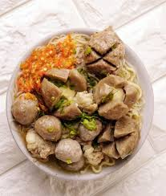

Bahan-bahan:
- 500 gram daging sapi giling
- 200 gram tepung sagu
- 4 siung bawang putih, haluskan
- 1 sendok teh garam
- 1/2 sendok teh merica bubuk
- 1 butir telur
- Air es secukupnya
- Kaldu sapi untuk kuah
- Bawang goreng dan daun bawang untuk taburan
Cara Membuat:
- Campur daging sapi giling dengan bawang putih halus, garam, merica, dan telur. Aduk rata.
- Tambahkan tepung sagu sedikit demi sedikit sambil diuleni hingga adonan bisa dipulung dan tidak lengket.
- Masukkan air es sedikit demi sedikit sampai adonan terasa kenyal dan mudah dibentuk.
- Didihkan air dalam panci besar, bentuk bakso bulat-bulat dengan tangan atau sendok, lalu masukkan ke dalam air mendidih.
- Masak hingga bakso mengapung dan matang, angkat dan tiriskan.
- Siapkan kuah kaldu sapi yang sudah panas, masukkan bakso ke dalam kuah.
- Sajikan dengan taburan bawang goreng dan daun bawang, bisa ditambah sambal dan kecap sesuai selera.